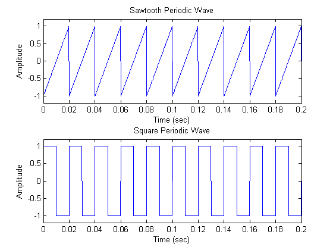
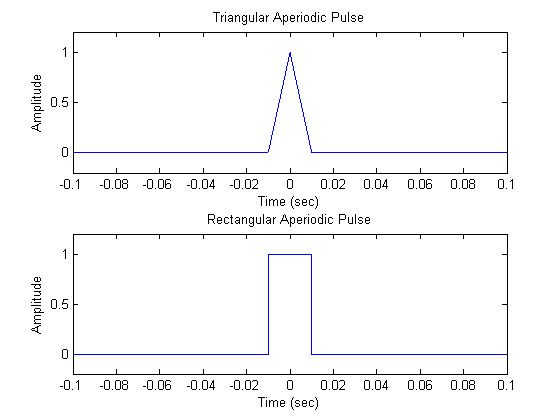
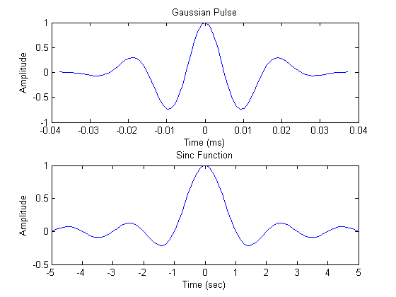
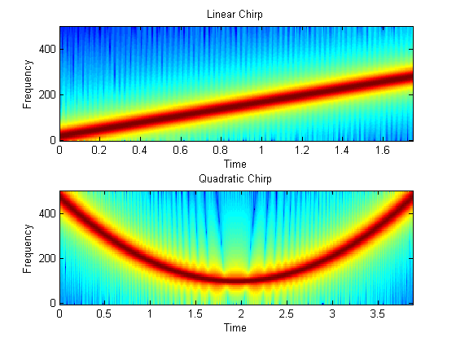
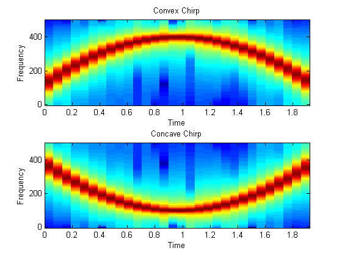
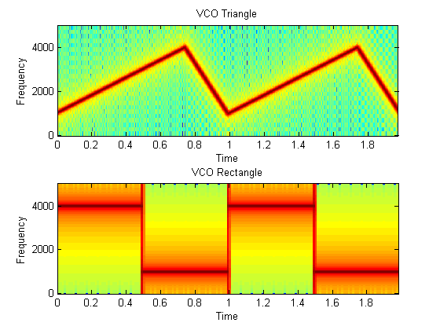
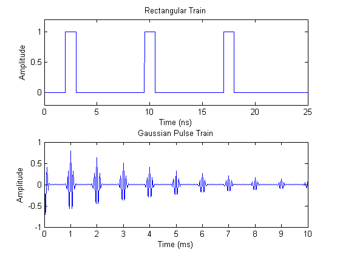

The Signal Processing Toolbox provides functions for generating widely used periodic and aperiodic waveforms, sequences (impulse, step, ramp), multichannel signals, pulse trains, sinc and Dirichlet functions. This demo illustrates some of them.
In addition to the sin and cos functions in MATLAB, the toolbox offers other functions that produce periodic signals such as sawtooth and square.
The sawtooth function generates a sawtooth wave with peaks at ±1 and a period of 2*pi. An optional width parameter specifies a fractional multiple of 2*pi at which the signal's maximum occurs.
The square function generates a square wave with a period of 2*pi. An optional parameter specifies duty cycle, the percent of the period for which the signal is positive.
To generate 1.5 seconds of a 50 Hz sawtooth (respectively square) wave with a sample rate of 10 kHz, use:
fs = 10000; t = 0:1/fs:1.5; x1 = sawtooth(2*pi*50*t); x2 = square(2*pi*50*t); subplot(211),plot(t,x1), axis([0 0.2 -1.2 1.2]) xlabel('Time (sec)');ylabel('Amplitude'); title('Sawtooth Periodic Wave') subplot(212),plot(t,x2), axis([0 0.2 -1.2 1.2]) xlabel('Time (sec)');ylabel('Amplitude'); title('Square Periodic Wave')
To generate triangular, rectangular and Gaussian pulses, the toolbox offers the tripuls, rectpuls and gauspuls functions.
The tripuls function generates a sampled aperiodic, unity-height triangular pulse centered about t = 0 and with a default width of 1.
The rectpuls function generates a sampled aperiodic, unity-height rectangular pulse centered about t = 0 and with a default width of 1. Note that the interval of non-zero amplitude is defined to be open on the right, that is, rectpuls(-0.5) = 1 while rectpuls(0.5) = 0.
To generate 2 seconds of a triangular (respectively rectangular) pulse with a sample rate of 10 kHz and a width of 20 ms, use:
fs = 10000; t = -1:1/fs:1; x1 = tripuls(t,20e-3); x2 = rectpuls(t,20e-3); subplot(211),plot(t,x1), axis([-0.1 0.1 -0.2 1.2]) xlabel('Time (sec)');ylabel('Amplitude'); title('Triangular Aperiodic Pulse') subplot(212),plot(t,x2), axis([-0.1 0.1 -0.2 1.2]) xlabel('Time (sec)');ylabel('Amplitude'); title('Rectangular Aperiodic Pulse') set(gcf,'Color',[1 1 1]),
The gauspuls function generates a Gaussian-modulated sinusoidal pulse with a specified time, center frequency, and fractional bandwidth.
The sinc function computes the mathematical sinc function for an input vector or matrix. The sinc function is the continuous inverse Fourier transform of the rectangular pulse of width 2*pi and height 1.
Generate a 50 kHz Gaussian RF pulse with 60% bandwidth, sampled at a rate of 1 MHz. Truncate the pulse where the envelope falls 40 dB below the peak:
tc = gauspuls('cutoff',50e3,0.6,[],-40);
t1 = -tc : 1e-6 : tc;
y1 = gauspuls(t1,50e3,0.6);
Generate the sinc function for a linearly spaced vector:
t2 = linspace(-5,5); y2 = sinc(t2);
subplot(211),plot(t1*1e3,y1); xlabel('Time (ms)');ylabel('Amplitude'); title('Gaussian Pulse') subplot(212),plot(t2,y2); xlabel('Time (sec)');ylabel('Amplitude'); title('Sinc Function') set(gcf,'Color',[1 1 1]),
The toolbox also provides functions to generate swept-frequency waveforms such as the chirp function. Two optional parameters specify alternative sweep methods and initial phase in degrees. Below are several examples of using the chirp function to generate linear or quadratic, convex and concave quadratic chirps.
Generate a linear chirp:
t = 0:0.001:2; % 2 secs @ 1kHz sample rate ylin = chirp(t,0,1,150); % Start @ DC, cross 150Hz at t=1sec
Generate a quadratic chirp:
t = -2:0.001:2; % +/-2 secs @ 1kHz sample rate yq = chirp(t,100,1,200,'q'); % Start @ 100Hz, cross 200Hz at t=1sec
Compute and display the spectrograms
subplot(211),specgram(ylin,256,1E3,256,250); ylabel('Frequency'), title('Linear Chirp') subplot(212),specgram(yq,128,1E3,128,120); ylabel('Frequency'), title('Quadratic Chirp') set(gcf,'Color',[1 1 1]);
Generate a convex quadratic chirp.
t = -1:0.001:1; % +/-1 second @ 1kHz sample rate fo=100; f1=400; % Start at 100Hz, go up to 400Hz ycx = chirp(t,fo,1,f1,'q',[],'convex');
Generate a concave quadratic chirp:
t = -1:0.001:1; % +/-1 second @ 1kHz sample rate fo=400; f1=100; % Start at 400Hz, go down to 100Hz ycv=chirp(t,fo,1,f1,'q',[],'concave');
Compute and display the spectrograms
subplot(211),specgram(ycx,128,1000); ylabel('Frequency'), title('Convex Chirp') subplot(212),specgram(ycv,128,1000); ylabel('Frequency'), title('Concave Chirp') set(gcf,'Color',[1 1 1]);
Another function generator is the vco (Voltage Controlled Oscillator) which generates a signal oscillating at a frequency determined by the input vector. Let's look at two examples using vco with an triangle and rectangle input.
Generate 2 seconds of a signal sampled at 10kHz whose instantaneous frequency is a triangle (respectively a rectangle) function of time:
fs = 10000; t = 0:1/fs:2; x1 = vco(sawtooth(2*pi*t,0.75),[0.1 0.4]*fs,fs); x2 = vco(square(2*pi*t),[0.1 0.4]*fs,fs);
Plot the spectrograms of the generated signals:
subplot(211),specgram(x1,512,fs,kaiser(256,5),220) ylabel('Frequency'), title('VCO Triangle') subplot(212),specgram(x2,256,fs) ylabel('Frequency'), title('VCO Rectangle') set(gcf,'Color',[1 1 1]);
To generate pulse trains, we can use the pulstran function. Below, we'll showcase two examples on how to use this function.
Construct a train of 2 GHz rectangular pulses sampled at a rate of 100 GHz at a spacing of 7.5nS.
fs = 100E9; % sample freq D = [2.5 10 17.5]' * 1e-9; % pulse delay times t = 0 : 1/fs : 2500/fs; % signal evaluation time w = 1e-9; % width of each pulse yp = pulstran(t,D,@rectpuls,w);
Generate a periodic Gaussian pulse signal at 10 kHz, with 50% bandwidth. The pulse repetition frequency is 1 kHz, sample rate is 50 kHz, and pulse train length is 10msec. The repetition amplitude should attenuate by 0.8 each time. The example uses a function handle to refer to the generator function.
T = 0 : 1/50E3 : 10E-3; D = [0 : 1/1E3 : 10E-3 ; 0.8.^(0:10)]'; Y = pulstran(T,D,@gauspuls,10E3,.5);
subplot(211),plot(t*1e9,yp);axis([0 25 -0.2 1.2]) xlabel('Time (ns)'); ylabel('Amplitude'); title('Rectangular Train') subplot(212),plot(T*1e3,Y) xlabel('Time (ms)'); ylabel('Amplitude'); title('Gaussian Pulse Train') set(gcf,'Color',[1 1 1]),